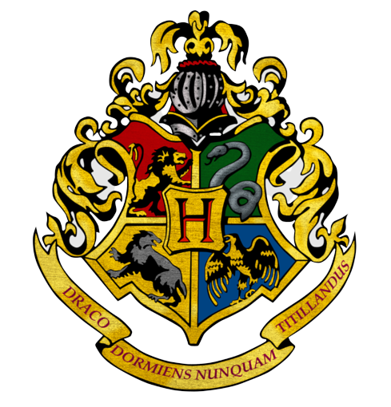
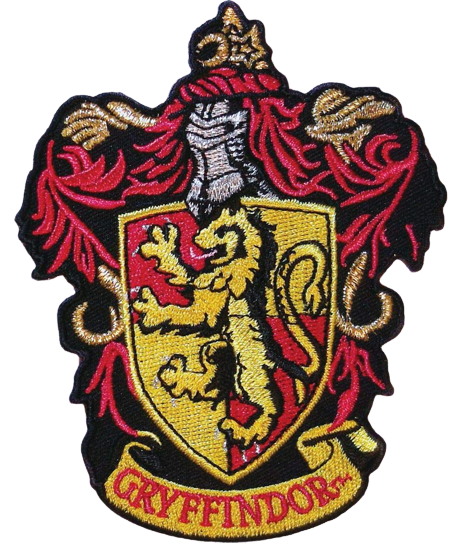
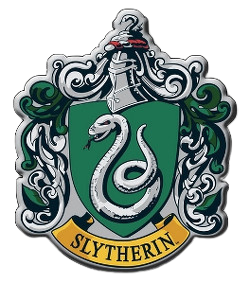
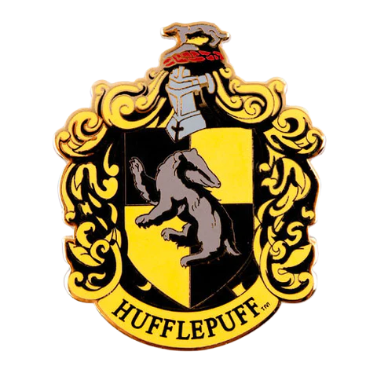
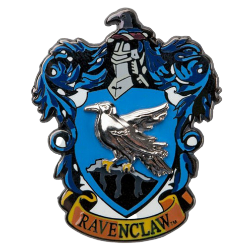

Welcome to Hogwarts
Draco Dormiens Nunquam Titillandus
Never tickle a sleeping dragon
About
Hogwarts School of Witchcraft and Wizardry is the British wizarding school, located in the Scottish Highlands.We accept magical students from Great Britain and Ireland for enrolment. We are a state-owned school, funded by the Ministry of Magic.The school has numerous charms and spells on and around it that made it impossible for a Muggle to see it as the school. Hogwarts was founded around 990 A.D. by four of the greatest wizards and witches of the age: Godric Gryffindor, Helga Hufflepuff, Rowena Ravenclaw, and Salazar Slytherin.They each represented an aspect of personality that they wanted to bring out in new students.They also placed certain protective enchantments in place to ensure the well-being of their students, for which reason the castle and grounds had both always been protected with Anti-Apparition Charms.Around the same time, the four founders employed the school's first Caretaker, Hankerton Humble, who would often clash with Peeves, the resident Poltergeist, which he would have in common with every successive caretaker after him in the history of Hogwarts.
Houses




The four Houses are called Gryffindor, Hufflepuff, Ravenclaw, and Slytherin. Each House has its own noble history and each has produced outstanding witches and wizards. While you are at Hogwarts, your triumphs will earn your House points, while any rule breaking will lose House points. At the end of the year, the House with the most points is awarded the House Cup, a great honour. In the early days of Hogwarts, the four founders handpicked students for their Houses. When the founders worried how students would be selected after their deaths, Godric Gryffindor took his hat off and each "put some brains" in it, creating the Sorting Hat to choose future students for each House. At the beginning of each school year, the magical Sorting Hat was placed on each new student's head during the Sorting Ceremony.
Placement's
Alumni's from Hogwarts School have been placed at the prestigious Ministry of Magic and 19 Minister's of Magic from are from Hogwarts School of Witchcraft and Wizardry earning upto 100000 golden galleons
Grading
Grading on routine homework seemed to be along the same lines as that for Muggle students. Hogwarts students also had more difficult exams as they progressed higher in the system. O.W.L.s (Ordinary Wizarding Levels) were a set of standardised tests for fifth year students, which determined what courses a student could continue to study in their final years at Hogwarts. They were the wizarding equivalent of Muggle O-levels
N.E.W.T.s (Nastily Exhausting Wizarding Tests) were optional levels of education for exceptional students, much like A-levels for Muggle students. To progress to N.E.W.T.-level, students had to receive certain high marks on O.W.L. exams, otherwise the student would not be able to cope with the increasingly difficult subject matter. N.E.W.T. tests occurred at the end of the seventh year and could not be retaken.
Made by Apeejay School, NOIDA